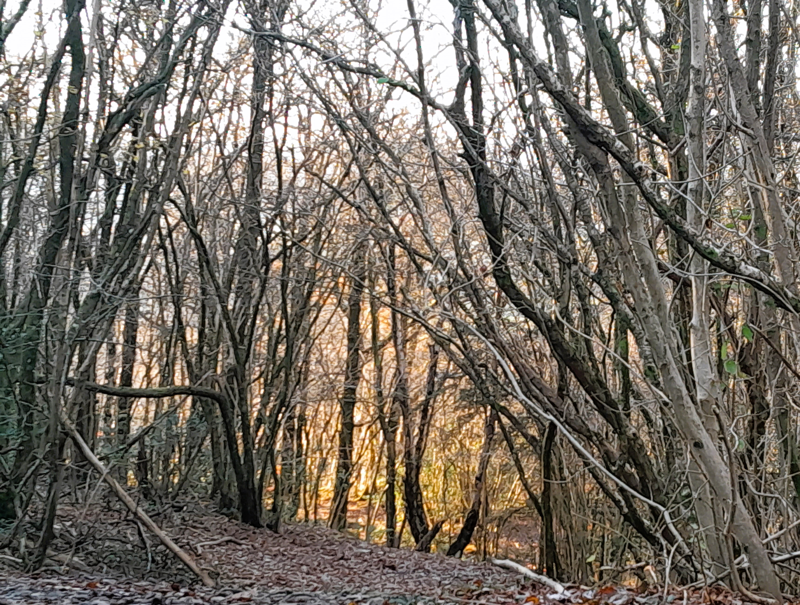
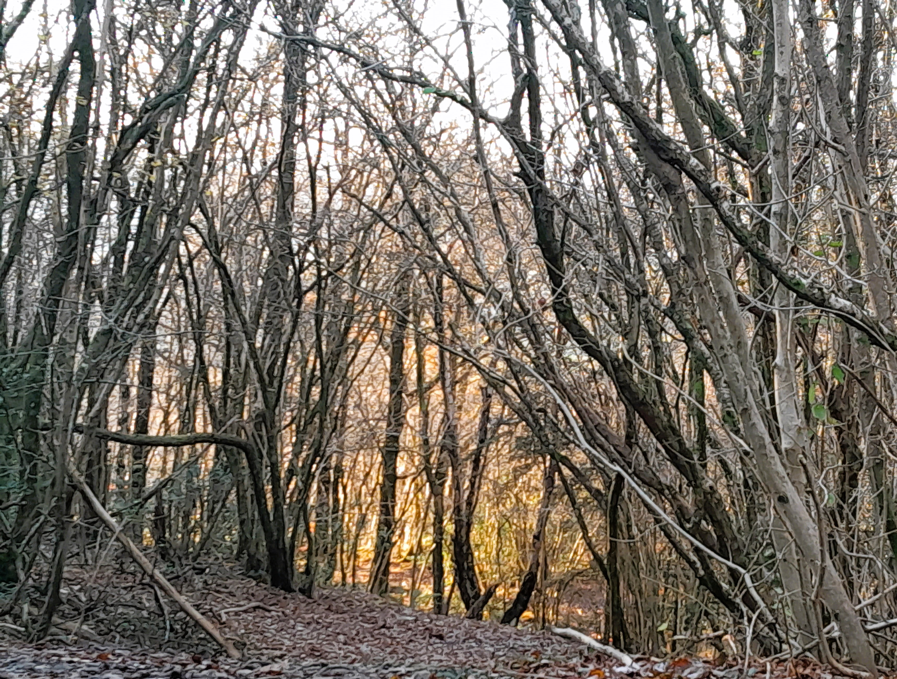

About Forest bathing
Although only a beginners guide to the practice, we hope to supply a little information
to set you off on your forest bathing journey.
What is forest bathing/shinrin-yoku?
A forest walk is a mindful walk in a forest environment remote from the stresses of the urban everyday world
Forest bathing itself is a japanese practice (Shinrin-Yoku), which involves reconnecting to nature by immersing
oneself in the forest, for example through a short walk.
Forest bathing is a practice with ancient roots, with Ancient Greek botanist Pliny the elder first noting the
health benefits of walking through a Pine forest - Pine is thought to be especially beneficial due to its fragrance.
The practice of shinrin-yoku was formalised in the 1980's by Tomohide Akiyama.
The simplicity of forest bathing is the key to its success - at its heart the practice involves mindfulness and
immersion in nature. When on a forest walk it is a good practice to take time to meditate on the sounds
textures, sights and smells of the forest
Benefits of forest bathing:
- Health benefits: physical health benefits include lowering blood pressure and strengthening the immune system
- Mental health benefits include mood and stress reduction benefits as well as associated benefits such as meeting with others and socialising
- Additional benefits might include an increased respect for the harmony and beauty of nature, as well as a feeling of empowerment and energisation
"Trees are poems that the earth writes upon the sky." Kahlil Gibran
 
